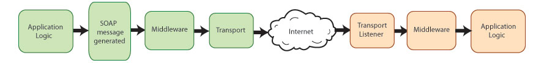
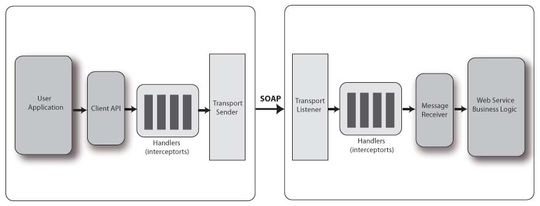

Apache Axis2 User's Guide
This guide provides a starting place for users who are new to Apache Axis2. It also covers some advanced topics, such as how to use Axis2 to create and deploy Web services as well as how to use WSDL to generate both clients and services.
For experienced users of Apache Axis2, we recommend the Advanced User's Guide. For users of JSON and Spring Boot, see the sample application in the JSON and Spring Boot User's Guide.Introducing Axis2
This section introduces Axis2 and its structure, including an explanation of various directories/files included in the latest Axis2 download.
Content
- Introducing
Axis2
- Installing and Testing Client Code
- Introduction to
Services
- Creating
Clients
- Building
Services
- Samples
- For Further Study
What is Axis2?
The Apache Axis2 project is a Java-based implementation of both the client and server sides of the Web services equation. Designed to take advantage of the lessons learned from Apache Axis 1.0, Apache Axis2 provides a complete object model and a modular architecture that makes it easy to add functionality and support for new Web services-related specifications and recommendations.
Axis2 enables you to easily perform the following tasks:
- Send SOAP messages
- Receive and process SOAP messages
- Receive and process JSON messages
- Create a Web service out of a plain Java class
- Create implementation classes for both the server and client using WSDL
- Easily retrieve the WSDL for a service
- Send and receive SOAP messages with attachments
- Create or utilize a REST-based Web service
- Create or utilize services that take advantage of WS-Security and WS-Addressing
Many more features exist as well, but this user guide concentrates on showing you how to accomplish the first five tasks on this list.
What's Under the Hood?
To understand Axis2 and what it does, you must have a good idea of the life cycle of a Web services message. Typically, it looks something like this:

The sending application creates the original SOAP message, an XML message that consists of headers and a body. (For more information on SOAP, see "Introduction to Services".) If the system requires the use of WS* recommendations such as WS-Addressing or WS-Security, the message may undergo additional processing before it leaves the sender. Once the message is ready, it is sent via a particular transport such as HTTP, JMS, and so on.
The message works its way over to the receiver, which takes in the message via the transport listener. (In other words, if the application doesn't have an HTTP listener running, it's not going to receive any HTTP messages.) Again, if the message is part of a system that requires the use of WS-Security or other recommendations, it may need additional processing for the purpose of checking credentials or decrypting sensitive information. Finally, a dispatcher determines the specific application (or other component, such as a Java method) for which the message was intended, and sends it to that component. That component is part of an overall application designed to work with the data being sent back and forth.
How Axis2 Handles SOAP Messages
Axis2 can handle processing for both the sender and the receiver in a transaction. From the Axis2 perspective, the structure looks like this:

On each end, you have an application designed to deal with the (sent or received) messages. In the middle, you have Axis2, or rather, you can have Axis2. The value of Web services is that the sender and receiver (each of which can be either the server or the client) don't even have to be on the same platform, much less running the same application. Assuming that Axis2 is running on both sides, the process looks like this:
- The sender creates the SOAP message.
- Axis "handlers" perform any necessary actions on that message such as encryption of WS-Security related messages.
- The transport sender sends the message.
- On the receiving end, the transport listener detects the message.
- The transport listener passes the message on to any handlers on the receiving side.
- Once the message has been processed in the "pre-dispatch" phase, it is handed off to the dispatchers, which pass it on to the appropriate application.
In Axis2, these actions are broken down into "phases", with several pre-defined phases, such as the "pre-dispatch", "dispatch," and "message processing", being built into Axis2. Each phase is a collection of "handlers". Axis2 enables you to control what handlers go into which phases, and the order in which the handlers are executed within the phases. You can also add your own phases and handlers.
Handlers come from "modules" that can be plugged into a running Axis2 system. These modules, such as Rampart, which provides an implementation of WS-Security, are the main extensibility mechanisms in Axis2.
How Axis2 Handles JSON Messages
Axis2 with REST provides GSON or the newer Moshi library as the JSON parser. With the proper axis2.xml configuration, this support is triggered by the HTTP header "Content-Type: application/json".
More docs concerning Axis2 and JSON can be found in the Pure JSON Support and JSON User Guide.
For users of JSON and Spring Boot - or anyone interesed in a complete JSON example that includes Spring Security - see the sample application in the JSON and Spring Boot User's Guide.
Axis2 Distributions
Axis2 is released in several distributions. Which one you need depends on what you'll be doing with it.
The Axis2 Standard Binary Distribution
If you're developing services and applications, you'll need the Axis2 Standard Binary Distribution. The distribution includes all the necessary *.jar files, as well as a variety of scripts that ease development. It has the following structure.
Code Listing 1: Axis2 Standard Binary Distribution
bin
axis2.bat
axis2.sh
axis2server.bat
axis2server.sh
java2wsdl.bat
java2wsdl.sh
wsdl2java.bat
wsdl2java.sh
setenv.sh
lib
activation-1.1.jar
...
XmlSchema.jar
repository
modules
modules.list
addressing-1.1.mar
..
services
services.list
version.aar
..
samples
...
webapp
...
conf
axis2.xml
LICENSE.txt
README.txt
NOTICE.txt
INSTALL.txt
release-notes.html
The bin directory includes a number of useful scripts. They include axis2.bat (or axis2.sh), which enables you to easily execute a Java command without having to manually add all the Axis2 jar files to the classpath, java2wsdl.bat (and .sh) and wsdl2java.bat (and .sh), which enable you to easily generate Java code from a WSDL file and vice versa, and axis2server.bat (and sh), a simple Web server that enables you to build Axis2's capability to send and receive messages into your own application.
As expected, the lib directory includes all the necessary .jar files. Services and modules are added to the repository directory. Axis2 comes with a standard module implementing WS-Addressing, and you can add any other necessary module such as Rampart to the repository/modules directory.
conf directory includes the axis2.xml which is the global deployment descriptor.
Finally, the samples directory includes all the sample code distributed with Axis2. See the list of samples and their descriptions.
axis2.war Distribution Directory Hierarchy
axis2.war is available in WAR (Web Archive) Distribution. The server side of Axis2 ships as a J2EE application, and has the following structure shown in Code Listing 2.
Code Listing 2: Server Side of Axis2
axis2-web
META-INF
WEB-INF
classes
conf
axis2.xml
lib
activation.jar
...
xmlSchema.jar
modules
modules.list
addressing.mar
...
soapmonitor.mar
services
services.list
aservice.aar
...
version.aar
web.xml
Starting at the top, axis2-web is a collection of JSPs that make up the Axis2 administration application, through which you can perform any needed actions such as adding services and engaging and dis-engaging modules. The WEB-INF directory represents the actual Axis2 application, including all the *.jar files, any included modules, and even the deployed services themselves.
The classes directory holds any class or property files that are needed by Axis2 itself, such as log4j2.xml. Any actual services to be handled by the system reside in the services directory in the form of an axis archive, or *.aar file. This file contains any classes related to the service, as well as the services.xml file, which controls any additional requirements, such as the definition of message senders and message receivers.
The main file in all this is axis2.xml, which controls how the application deals with received messages. It defines message receivers and transport receivers, as well as defining transport senders and determining which modules are active. It also defines the order of phases, and the handlers to be executed within each phase.
You can control all of this information through the use of the Web application, but if you restart the Axis2 application, these changes are lost and the server goes back to the definitions in the axis2.xml file.
Axis2 also provides a third distribution, the source distribution, which enables you to generate this .war file yourself.
Axis2 Documentation Distribution Directory Hierarchy
The Documents distribution includes all Axis2 documentation including the xdcos and javadocs. It has the following structure:
Code Listing 3: Axis2 Documents Distribution
docs
javadocs
xdocs
LICENSE.txt
README.txt
release-notes.html
The javadocs directory includes all the standard API documentation for the Axis2 API, with other documentation (like this document) in the xdocs directory.
Axis2 and Clients
Now that explains how Axis2 behaves as part of a Web application. What about a standalone client that is not part of a J2EE application? In that case, a sender can use the Axis2 default properties, in other words, no special handlers, and so on. But you also have the option to tell the client to load its own copy of the axis2.xml file and behave accordingly.
See Next Section - Installing and Testing Client Code